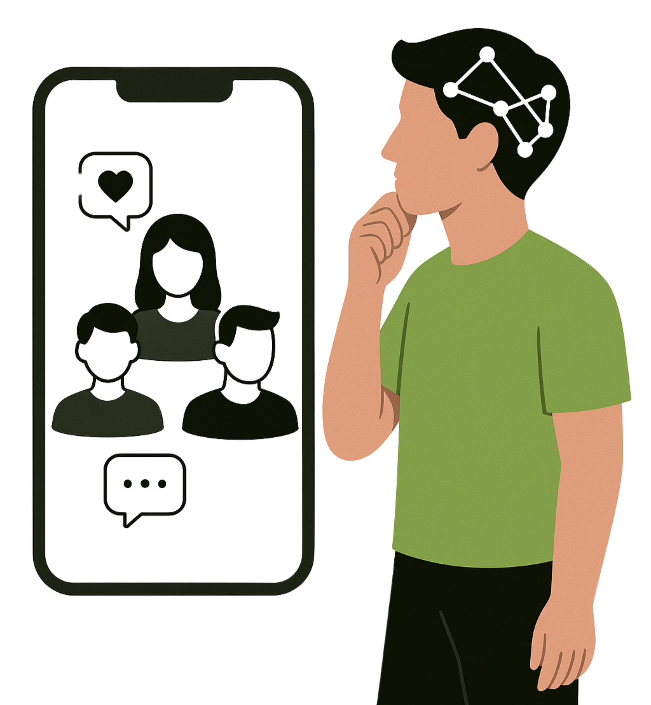

Psychologische Effekte
Was Social Media mit deinem Kopf macht
Stundenlang scrollen, liken, vergleichen – soziale Netzwerke prägen, wie wir denken, fühlen und handeln. Doch oft geschieht das unbewusst. Diese Seite zeigt dir, welche psychologischen Auswirkungen dahinterstecken – und wie du gesünder damit umgehen kannst.
Mehr erfahren →

Suchtverhalten & Abhängigkeit
Warum Social Media süchtig macht – und was du tun kannst, um Kontrolle und Fokus zurückzugewinnen.
Mehr dazu →Emotionale Auswirkungen
Zwischen Vergleichsdruck, FOMO und Selbstzweifeln – Die emotionale Achterbahn sozialer Medien
Mehr dazu →Reizüberflutung - Konzentrationsschwäche durch Soziale Netzwerke
Wie ständige Reize deine Konzentration zerschneiden – und was hilft, wieder bei dir zu bleiben.
Mehr dazu →